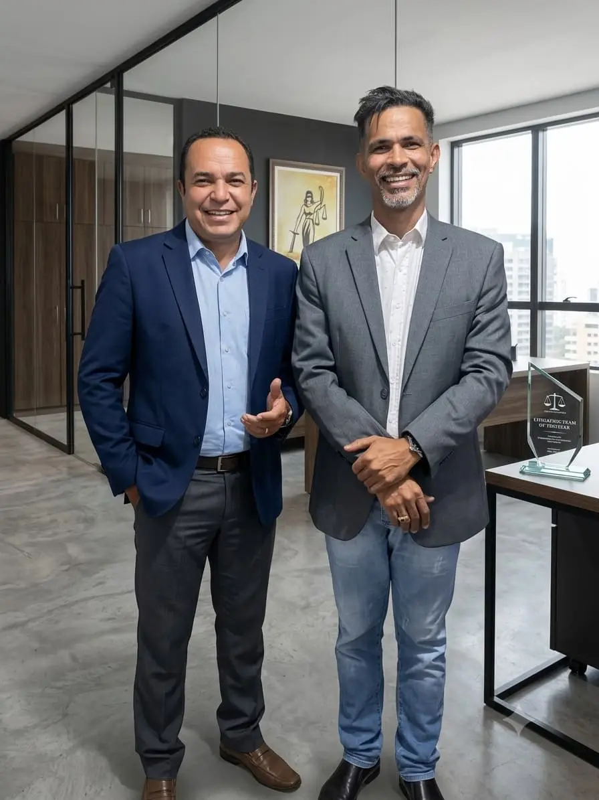

Protegendo as prerrogativas, a carreira e os direitos funcionais de quem dedica a vida à sociedade. Atuação técnica especializada perante o Poder Judiciário em todo o Estado de Goiás.
Dr. Isaías Rufino
Advogado Especialista
Da caserna aos tribunais: a experiência de quem viveu a realidade do servidor público na pele.
Sou Isaías Rufino, Sargento Veterano da Polícia Militar do Estado de Goiás (PMGO) com quase 30 anos de dedicação e superação no serviço público.
Após encerrar honrosamente minha carreira militar, decidi canalizar toda a experiência prática adquirida na caserna para uma nova missão: defender juridicamente aqueles que dedicam suas vidas à sociedade.
Hoje, como advogado especialista em Direito Militar e Direitos dos Servidores Públicos, atuo de forma técnica, ética e estratégica tanto na esfera administrativa quanto no Poder Judiciário em todo o estado de Goiás.
Com amplo histórico prático, guio policiais militares, bombeiros e servidores estaduais no resgate de direitos fundamentais assegurados por lei, como a Licença-Prêmio, promoções de carreira e revisões de atos disciplinares.
Quase 30 anos dentro da PMGO.
Defesa de PM, BM e Servidores.
Direitos e prerrogativas restabelecidos.
Defesa estratégica e técnica em PAD, Sindicâncias, Conselhos de Disciplina e Justificação.
Ações corretivas para preterição em promoções, ressarcimento de preterição e evolução funcional.
Cobrança e garantia de Licença-Prêmio não gozada, indenizações e revisão justa de proventos.
Anulação de punições disciplinares abusivas ou ilegais e reabilitação de comportamento funcional.

Parceria e Confiança
Dr. Isaías Rufino com Arnaldo Leite de Souza
Assista à explicação do Dr. Isaías
Cálculo baseado na taxa média do Banco Central. A margem consignável e as taxas de juros
cobradas muitas vezes divergem da legalidade, comprometendo diretamente a sua renda.
Uma avaliação técnica é fundamental para identificar cobranças abusivas.
Clique em Solicitar Análise para obter mais detalhes com Dr. Isaías:
Seus dados são protegidos pela LGPD e enviados diretamente para o nosso sistema jurídico.
5,0 de 118 avaliações reais no Google
"Excelente defensor. Especialista nas causas militares, sempre rápido e pronto a atender, não perde prazo dos processos. Todas as causas que iniciamos juntos, foram ganhas. Recomendo."
"Excelente advg e muito prestativo, das três vezes que precisei do dr Isaías ele ganhou as ações."
Em respeito à transparência e agilidade, disponibilizamos o acesso direto aos principais sistemas de consulta processual jurídica do estado de Goiás. Tenha o número do seu processo em mãos.
O primeiro atendimento pode ser feito de forma presencial ou totalmente online por chamada de vídeo. Analisamos detalhadamente a documentação funcional do servidor ou militar para identificar o direito violado antes de propor qualquer medida jurídica.
Sim. Devido à digitalização completa dos tribunais modernos e dos sistemas de processo eletrônico (PJe), nosso escritório atende de forma estratégica e realiza defesas de servidores públicos e militares em qualquer comarca de Goiás.
Os prazos variam conforme o estatuto ou regulamento disciplinar aplicável ao órgão ou corporação, podendo ser de poucos dias após a notificação. Por isso, é fundamental procurar orientação jurídica assim que o servidor ou militar for instaurado em um processo, para não perder o prazo de defesa ou recurso.
Sim. Atuamos em ações de reintegração ao cargo ou posto, revisão de proventos de aposentadoria e reforma, licença-prêmio e demais direitos funcionais de militares e servidores públicos, sempre com base em análise técnica da carreira e do ato administrativo questionado.
Os juros são considerados abusivos quando ultrapassam significativamente a taxa média de mercado apurada pelo Banco Central para operações equivalentes. Militares e servidores públicos com empréstimos consignados descontados em folha podem ter direito à revisão do contrato e à restituição de valores pagos indevidamente. Por isso, disponibilizamos no site uma simulação inicial gratuita para identificar esse potencial antes de avançar com a análise técnica completa.
Os honorários são definidos após a análise do caso, considerando a complexidade, o tipo de processo (administrativo ou judicial) e o tempo estimado de atuação. Essa avaliação é sempre apresentada de forma transparente ao cliente antes do início dos trabalhos.
Sim. Além do acesso direto aos sistemas de consulta processual do Projudi e do Processo Administrativo Digital disponibilizados no site, o cliente recebe atualizações periódicas sobre o andamento do seu caso diretamente pelo escritório.